2. ПРАКТИЧЕСКОЕ ОПРЕДЕЛЕНИЕ ПАРАМЕТРОВ КАТУШЕК И КОЭФФИЦИЕНТА СВЯЗИ КАТУШЕК
На практике индуктивную связь катушек с параметрами R1 << XL1 и R2 << XL2 определяют отношением ЭДС взаимной индукции Е2M = U2Х второй катушки в режиме холостого хода к напряжению питания U1 первой катушки (рис. 9.2, а), т. е. 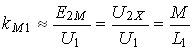 или, при питании со стороны второй катушки (рис. 9.2, б), отношением 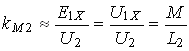, а коэффициент связи катушек kМ - по формуле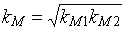.
При этом взаимная индуктивность
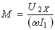 или 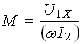,
где 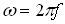 - угловая частота напряжений u1и u2.
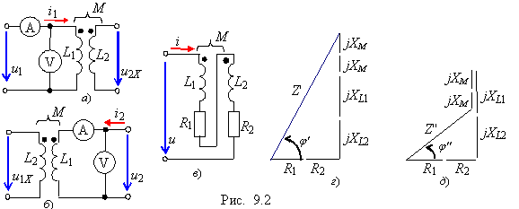
Для определения параметров обмоток идеального воздушного трансформатора собирают схему цепи (рис. 9.2, а) при питании со стороны первичной обмотки, а затем схему при питании со стороны вторичной обмотки (рис. 9.2, б). Снимают показания вольтметра и амперметра и находят индуктивные сопротивления и индуктивности обмоток:
XL1 = U1/I1; L1 = XL1/ω и XL2 = U2/I2; L2 = XL2/ω.
Метод определения взаимной индуктивности М обмоток (катушек) с параметрами R1, L1 и R2, L2 воздушного трансформатора заключается в следующем. Обмотки трансформатора соединяют последовательно друг с другом и с источником идеального напряжения u вначале, например, согласно (рис. 9.2, в), а затем встречно. При этом комплексные входные сопротивления трансформатора
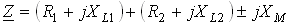,
где 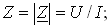 jXМ = jωМ.
Если известны активные сопротивления обмоток R1 и R2, входные (эквивалентные) индуктивные сопротивления X' и Х"( схемы рис. 9.2, в при согласном и встречном включениях обмоток трансформатора можно определить из треугольников сопротивлений (рис. 9.2, г и д) по формулам:
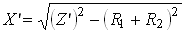и 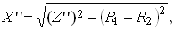 (9.2)
где Z' = U/I1с и Z" = U/I1в - модули входных сопротивлений цепи при согласном и встречном включениях обмоток.
Если активные сопротивления обмоток R1 и R2 неизвестны, то для определения эквивалентных индуктивных сопротивлений схем необходимо на входе цепи подключить осциллограф для вычисления (по осциллограммам) угла сдвига фаз φ (см. рис. 9.2, г и д) между входными напряжением и током, или ваттметр (φ = arccos(P/UI))
Тогда
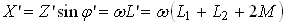 и
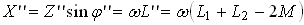.
Определив ΔХ = X' - Х'' = 4ωМ, находят взаимную индуктивность
М = ΔХ/4ω. (9.3)
Векторные диаграммы напряжений схемы рис. 9.2, в при согласном и встречном включениях обмоток трансформатора подобны фигурам, представленным на рис. 9.2, г и д.
Так как входное сопротивление Z' > Z'', то ток I1с при согласном включении обмоток меньше тока I1в при их встречном включении.
Если подключить резистивную нагрузку Rн к зажимам вторичной обмотки реального воздушного трансформатора (рис. 9.3, а), то передача энергии в нагрузку от источника энергии осуществляется посредством изменяющегося магнитного потока взаимоиндукции без электрической связи между обмотками.
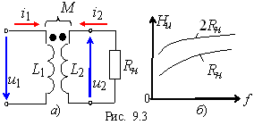
Амплитудно-частотная характеристика трансформатора
Hu(f) = U2(f)/U1(f)
зависит как от частоты f напряжения источника, так и от величины сопротивления нагрузки (рис. 9.3, б). С увеличением частоты напряжения u1 индуктивные сопротивления катушек возрастают пропорционально частоте, и выходное напряжение стабилизируется, т. к. при достижении сопротивления Z2 > (5 …10)Rн влияние изменения сопротивления нагрузки на процессы в трансформаторе незначительное.